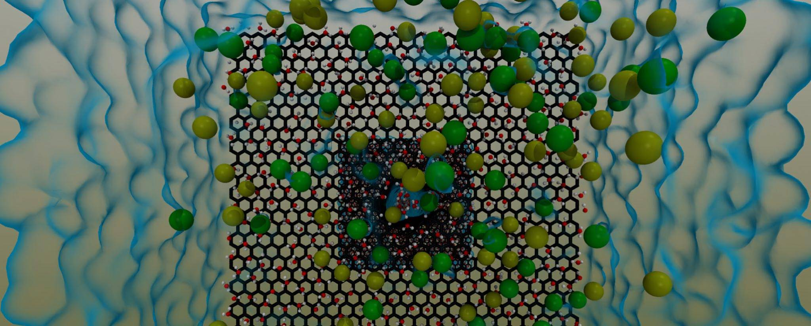

<div class="container">	

	<div class="row"> 
    <div class="col-md-12 smallspace">

<!-- Code for carousel on home page-->
<div id="carousel" class="carousel slide" data-ride="carousel">
    <ol class="carousel-indicators">
        <li data-target="#carousel" data-slide-to="0"></li>
        <li data-target="#carousel" data-slide-to="1"></li>
        <li data-target="#carousel" data-slide-to="2"></li>
    </ol>
    <div class="carousel-inner">
        <div class="item active">
                
        </div>
        <div class="item">
            
        </div>
        <div class="item">
            
        </div>
    </div>
    <a href="#carousel" class="left carousel-control" data-slide="prev">
        <span class="glyphicon glyphicon-chevron-left"></span>
    </a>
    <a href="#carousel" class="right carousel-control" data-slide="next">
        <span class="glyphicon glyphicon-chevron-right"></span>
    </a>
</div>

<!--homepage text-->
    <div class="mediumspacer"></div>  
    

    <div class="row mt-3">
        <div class="col-md-12">
            <div class="smallhead smallspace">
        
                <p><strong>Welcome to the mfX research group!</strong></p>

                <p align="justify">We are a large computational group at the University of Edinburgh investigating a range of multiscale flow problems that target important engineering challenges of the 21st century in health, transport, water and energy. Our research spans fundamental engineering science at the nano/micro/meso/macro scales, multiscale method development, highly parallel software development that run on supercomputers, and industry-focused engineering applications.</p>

                <p align="justify">Examples of our recent work include: non-equilibrium gas transport through porous media for safer oil/gas reservoir management; nano/micro bubble cavitation dynamics for disease targeting; nano/micro-engineered surfaces with improved performance (e.g. anti-icing, marine drag reduction, nanotube water filtration membranes, evaporating cooling nanopipes); liquid-surface damage analysis; granular and pedestrian flow predictions.</p>

                <p align="justify">We actively collaborate with researchers from the UK and around the world, and engage with various industrial companies to adapt our techniques for their problems.</p> 

            </div>
	    </div>
    </div>

    <div class="spacer"></div>   

<!-- Code for setting up the news tab on homepage-->
    <div class="row">
        <div class="col-md-6">
        <a class="hugehead" href="/news/"> News </a>
        <hr class="thick">
        
        <div class="feedbox pad-left">
        
        {% for news in site.categories.news limit:5 %}   
            <div>
            <i class="fa fa-bullhorn fa-fw"></i>
            <a class="smallhead" href="/news">
                {{ news.title }}
             </a>
            </div>
            <div class="note">
                {{ news.content }}
            </div>
            <div class="smallnote">
                Posted {{ news.date | date_to_string }}          
            </div>
            <div class="spacer"></div>        
        {% endfor %}

        </div>
        <div class="hugespacer"></div>   
    </div>

<!-- Code for setting up the papers tab on homepage-->
    <div class="col-md-6">
        <a class="hugehead" href="/papers/"> Latest Papers </a>
        <hr class="thick">
        
        <div class="feedbox pad-left">
      
        {% for paper in site.categories.papers limit:6 %}   
            <div>
                <i class="fa fa-file-text-o fa-fw"></i>
                <a class="note" href="{{ paper.url }}">
                {{ paper.title }}
                </a>
            </div>
            <div class="verysmallhead">
                {{ paper.shortref }}
            </div>
            <div class="smallnote">
                Published {{ paper.date | date_to_string }}          
            </div>
            <div class="spacer"></div>        
        {% endfor %}

        </div>

        </div>
    </div>
</div>


